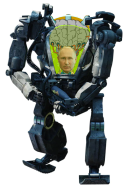
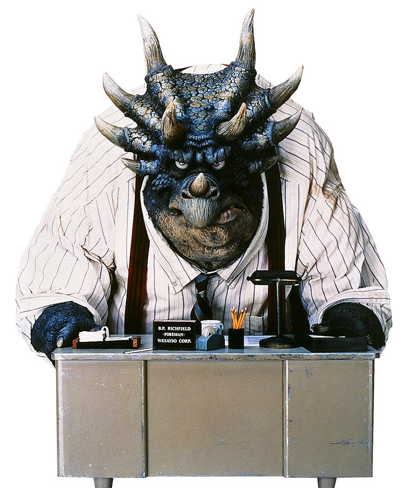

by OMG
Vladimir Vladimirovitch Poutine, appeared in public for the first time since a decade, putting an end to his death rumors. He said he was in good shape and He was ready for keeping peace on the moon and a new reelection.

Son vs Father
Donald Trump Jr accuses his so-called father of being a fraud. For him his father is dead, and his virtual avatar is only a deception to extract all power from him. Donald Trump Senior said "I no longer recognize you my son, you are no longer my son, you are no longer in my camp, the camp of truth. I am the truth. You are a bullshit-hoax" As long the trial process whether to recognise the 'avatar' as D. Trump or not is lasting, none of them can handle the Trump's family business.

Elsewhere,
not so far,
... in the wood 4-27
Let go your conscious self and act on instinct
The moon slipped away in the night, surprising uncarefull travellers. And uncarefull, that was the second name of a kid, called Luke in first place.
He was heading to his uncle Arnaud'shelter when the darkness fell down on him.
He got lost, followed unkown path leading into the wood...,4-27 wood.As he got mostly in the heart of the wood, he heard strange noise and saw some lights.
He got closer, hoping for some help.
Then he figured out the weather was locally disturbed, the scene was suddenly blurred, awkward.
Frightened, got goose bumps but holding on his courage, he tried to get closer.
Hearing some uttered mystical incantation (css, html, vs, git push, merge,...), he understood it was a druidic secret ceremony.
No one would believe him, no living soul have ever came back to told about rituals.
Crack, suddenly he had stepped on a dead branch.
Oh no! what a fool, he run now away for his life. Owls, wolves, weasels, ... ... on his footprints
to be continued ...

"Don't underestimate the Force. I suggest you try it again, Luke." This time, let go your conscious self and act on instinct. In my experience, there is no such thing as luck. You're all clear, kid. Let's blow this thing and go home!
You don't believe in the Force, do you? Partially, but it also obeys your commands. The plans you refer to will soon be back in our hands. As you wish.
Trial for one & all
Can Tech sell Human Beings?
Regenex Corp, the first company to create clones, is pursued by the children of a man who was murdered by the clone of his deceased wife.
The debates on the creation of clones are relaunched. Lots of organizations recall that they had this practice banned, a ban which was shattered in the face of economic imperatives.

Human Rights Watch is calling for a real trial, so that clones are considered full human beings and not mere copies or pets.
Agence Web qui s'est progressivement imposé en évoluant sans renier ses valeurs.
2024
Formation - Recherche de partenaires partagant les même valeur d'éco-design - Démarrage
2026
Passage en société
Les 'såvadjes': les organisations passés par l'agence pour leur site augmente.
Les 'såvadjes'prennent le temps de choisir plutôt que de se jeter sur des 'usines à gaz'.
2028
labellisation LUCIE Progress
ISO 26000 - Responsabilité sociétale: ce sont des lignes directrices pour tous ceux qui ont conscience qu’un comportement socialement responsable et respectueux de l’environnement est un facteur clé de la réussite. Non seulement ISO 26000 donne la bonne ligne de conduite à suivre mais, de plus en plus, cette norme est appliquée pour évaluer l’engagement des organisations en faveur du développement durable ainsi que leur performance globale.
2030
Frédéric Galoppin occupe dorénavant une position plus managériale
2040
Le nombre de 'såvadje' s'est élevé plus haut que jamais et l'impact négatif des sites web a baissé.
L'influence de l'agence sur d'autres agences se fait bien sentir.